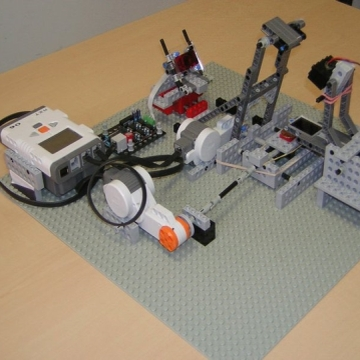
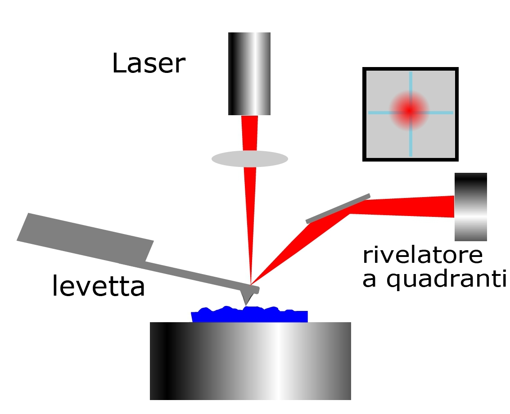

Warning: fopen(/home/httpd/html/legocms/tmp/cache/contentcache.php) [function.fopen]: failed to open stream: Permission denied in /home/httpd/html/legocms/lib/classes/class.contentoperations.inc.php on line 549
Warning: fwrite(): supplied argument is not a valid stream resource in /home/httpd/html/legocms/lib/classes/class.contentoperations.inc.php on line 550
Warning: fclose(): supplied argument is not a valid stream resource in /home/httpd/html/legocms/lib/classes/class.contentoperations.inc.php on line 551
Questo modello, realizzato con i pezzi Lego, riproduce il principio di funzionamento di un microscopio a Forza Atomica. In esso l'estremità di una sonda esplora la superficie del campione da esaminare e ogni piccolo movimento della punta è misurato tramite un semplice sistema ottico. Il fascio di un diodo laser colpisce la parte riflettente della sonda e prosegue fino ad arrivare su un fotorivelatore a quadranti.
L'NXT controlla i movimenti dei due motori che spostano opportunamente il campione in modo da esplorare un'area di circa 7x 7 mm. Durante la scansione ogni piccolo movimento verticale della punta è trasformato in un segnale elettrico che l'NXT invia al PC dove si forma un'immagine tridimensionale del campione.
Una app Android controlla l'AFM-Lego, permettendo di impostare area di scansione, risoluzione e velocità. Le immagini ottenute dal microscopio vengono mostrate sullo schermo del tablet. Scarica l'app AndroidAFM (di Alice Cavaliere)

Come funziona un vero microscopio AFM.
Nella microscopia a forza atomica (indicata dalla sigla AFM Atomic Force Microscopy) si rivelano le deboli forze di interazione tra l'estremità di una sonda e la superficie del campione da esaminare. Il sensore di forza è una levetta (cantilever) molto sottile e flessibile alla cui estremità è realizzata una punta. Generalmente ha una forma rettangolare con lunghezza di circa 100 µm e larghezza 30 µm circa, il suo spessore è tipicamente inferiore ad 1 µm. Un sottile fascio di luce da un diodo laser colpisce il dorso della levetta e si riflette in direzione di un fotorivelatore a quadranti. Se la sonda viene avvicinata al campione la punta risente delle forze d'interazione con la superficie del campione da esaminare e la levetta si flette. Ogni minima deviazione del fascio riflesso, causata da una variazione d'inclinazione della levetta, è trasformata in un segnale elettrico proporzionale alla forza che in quel momento agisce sulla punta.

Un attuatore, di solito un movimentatore piezoelettrico, sposta la sonda sulla superficie del campione secondo una matrice di punti in modo da esplorare tutta la zona da esaminare. Contemporaneamente una retroazione interviene per muovere in altezza la sonda, in modo da mantenere sempre uguale la forza che la sonda esercita sul campione. Per rispettare questa condizione la sonda deve continuamente cambiare la posizione verticale seguendo esattamente il profilo della superficie. In questo modo si esplora il campione secondo una griglia di punti e si ottiene in ciascuno di essi una misura d'altezza. Ricostruendo opportunamente i dati si ricava una "immagine" (mappa) topografica della superficie che solitamente è visualizzata secondo una convenzione di colori (zone basse scure, zone alte chiare). Il funzionamento del microscopio è guidato da un'elettronica di controllo, che effettua la retroazione ed è interfacciata ad un computer. L'utilizzatore pilota tutto il sistema attraverso un software dedicato.
Con un microscopio AFM si possono osservare dettagli di un campione fino a pochi nanometri di larghezza con una risoluzione verticale inferiore al nanometro. Il principio di funzionamento descritto sopra si riferisce al microscopio AFM utilizzato in modalità "contatto" che è stata la prima e più comune tecnica utilizzata. Negli strumenti attuali vengono sfruttate altre modalità di funzionamento dello strumento nelle quali cambia il tipo di interazione tra sonda e campione. Tra queste va citata la modalità "dinamica" nella quale viene fatta oscillare la levetta alla sua frequenza di risonanza (tipicamente 100-200 Khz) e il controllo della distanza sonda-superficie è basato sulla ampiezza della oscillazione. Questa modalità è spesso utilizzata per campioni biologico come cellule, batteri, proteine o DNA e in generale per superfici non molto dure come polimeri o fibre naturali.